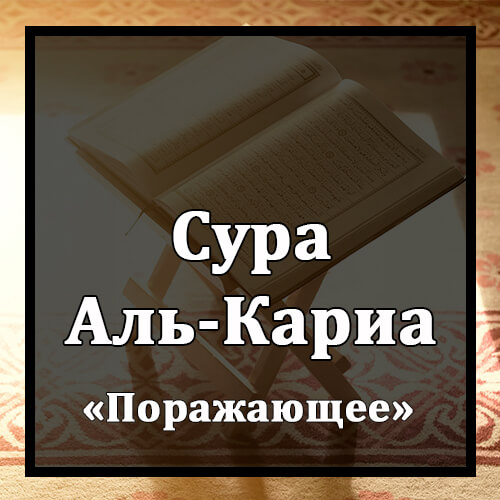

Бисмилляхир-Рахманир-Рахиим
Во имя Аллаха Милостивого и Милосердного!
Аль-Кари`а.
Великое бедствие (День воскресения)!
Маль-Кари`а.
Что такое Великое бедствие (День воскресения)?
Уа Ма Адрака Маль-Кари`а.
Откуда ты мог знать, что такое Великое бедствие (День воскресения)?
Йаума Йакунун-Насу Кальфарашиль-Мабсуус.
В тот день люди будут подобны рассеянным мотылькам,
Уа Такунуль-Джибалю Каль`ихниль-Манфууш.
а горы будут подобны расчесанной шерсти.
Фа`амма Ман Сакулят Мауазинуух.
Тогда тот, чья чаша Весов окажется тяжелой,
Фахува Фи `Ишатин Радыйаа.
обретет приятную жизнь.
Уа Амма Ман Хаффат Мауазинуух.
Тому же, чья чаша Весов окажется легкой,
Фа`уммуху Хавийаа.
пристанищем будет Пропасть.
Уа Ма Адрака Ма Хийаах.
Откуда ты мог знать, что это такое?
Нарун Хамийаа.
Это - жаркий Огонь!